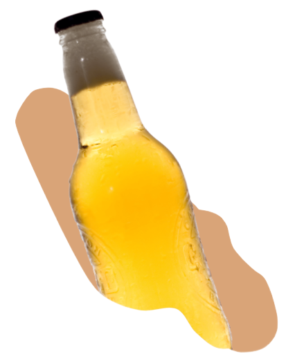

PIVA

Premiant ležák
Spodně kvašený světlý ležák s plným tělem a silným řízem. Vyniká svou výraznou chmelovou hořkostí získanou kombinací českých chmelových odrůd Premiant a ŽPČ. Svěží chmelové aroma láká k dalšímu napití.
12,3% EPM, alk. 4,8% obj., IBU 40
Pro Dřevák je Premiant Ležák vařen v Minipivovaru Radnice.
Indian Pale Ale
Svrchně kvašený, lehčí a velmi dobře pitelný, osvěžující India Pale Ale. Vyladěná kombinace aromatických odrůd (Citra, Galaxy, Mosaic, Cascade) dodává svěží citrusové aroma s ovocným nádechem broskví a angreštu. Studené chmelení odrůdou Cascade pak přidává květinovo/kořeněný charakter.
13 % EPM, alk. 5,7% obj., IBU 70
Pro Dřevák je IPA vařena v Minipivovaru Loužek.